開発・提供終了
諸事情により提供・開発が終了した(と思われる)サービス・ツールなどに対して、感謝や敬意を表するため掲載しています。
おすすめのサービス・ツール
コンテスト後の情報収集・発信
-
AtCoder TL - レーティング帯ごとのTwitterタイムラインを生成することができます。また、全てのタイムラインをまとめたWeb版も公開されています。
- 確認した日: 2023/06/20
- 理由: Twitter APIの有料化に伴い更新停止、サービス終了の告知を確認したため(出典)。
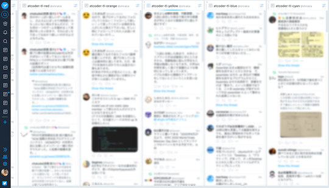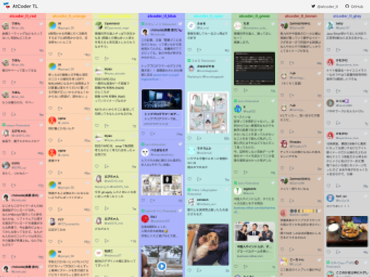
Webアプリ・Webサイト
問題を解く
-
AtCoder Scores - AtCoder Grand Contest 001(AGC 001)以降の問題が点数順に並んでいる。
- 理由: サービスの提供終了を告知した作者のツイートを観測したため。
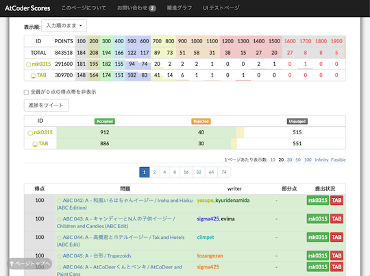 -
AtCoder Virtual Contest - 仮想コンテスト(本番のコンテストに近い状態で練習できる)を開催できるWebサービス。
- 理由: AtCoderの仕様変更に伴うもの。
- 代替手段: 公式のバーチャル参加やAtCoder ProblemsのVitual Contestsを利用する。
- ばちゃこんお知らせbot - AtCoder Virtual Contestに関する情報をつぶやくbot。
- 理由: AtCoderの仕様変更およびAtCoder Virtual Contestのサービス終了に伴い、新たな情報提供が困難な状況。
- 代替手段: 調査中。
-
wacchoz/kyopro - 過去問の難易度を推定している。2019年11月以降は、更新が途絶えている。
- 理由: 記載なし。
- 代替手段: AtCoder Problemsで確認できる。
問題を解くときの補助ツール
-
AtCoderノートブック - 過去問を繰り返し解くときに便利なメモアプリ。
注意
解答状況を変更すると、過去の履歴が消える仕様になっている。
- 理由: 記載なし。
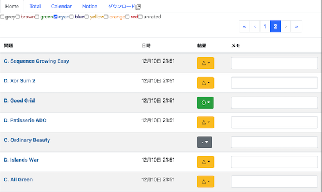 -
Devotter - 1日1回AC(Accepted)数をTwitterにツイートするWebアプリ。
- 理由: 記載なし。
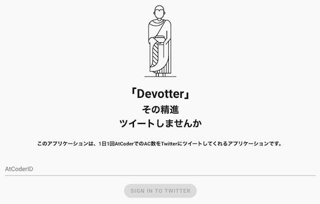 -
PROCON Q&A - 競技プログラミングを対象とした質問と回答を投稿できる。
- 確認した日: 2021/12/15
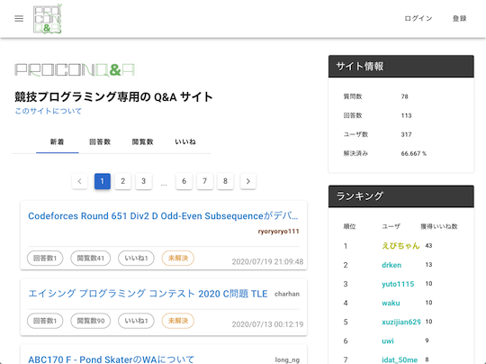
解説を読む
- AtCoderEditorials - 解法ブログの投稿・閲覧と知見の集約を目指したWebサービス。
- 理由: 記載なし。
- 代替手段: 公式解説や個々の解説ブログ、提出コードを見る。
コンテストに参加する
-
AtCoder Calendar - 指定したURLをGoogleカレンダーに登録する。
- 理由: 記載はないが、AtCoderの仕様変更に伴うものと思われる。
- 代替手段: CLISTやCompetitive Programming Contests Calendarなどを利用する。
-
AtCoderカレンダー通知 - イベント開始15分前に通知する。
-
Future Contest - 開催予定のコンテスト情報を表示するWebアプリ。yukicoder、CS Academy、Codeforcesにも対応している。
- 理由: Google Cloud Platform(GCP)で、Go1.9の提供が終了したため。
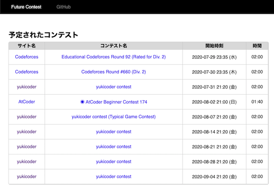
コンテストの成績を見る
-
AtCoder Marathon Rating History - AtCoder Heuristic Contestのレーティングの推移を表示する。
- 理由: AtCoderで、ヒューリテスィックコンテストのランキング・レーティンググラフが実装されたため。
- 対処方法: AtCoderのランキングページやプロフィールページを閲覧する。
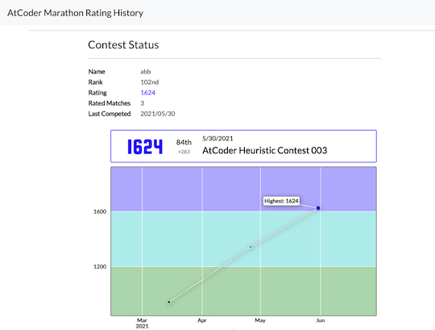 -
AtCoder Performances - 指定した2人以上のパフォーマンスの推移が比較できる。
- 理由: サービスの提供終了を告知した作者のツイートを観測したため。
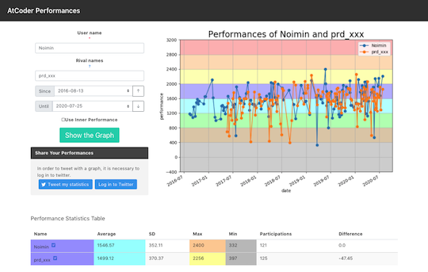 -
Rating History - 複数のコンテストサイトで、解いた問題数とレーティングの推移を表示する。
- 理由: 作者からサービスの提供終了の連絡を受けたため。
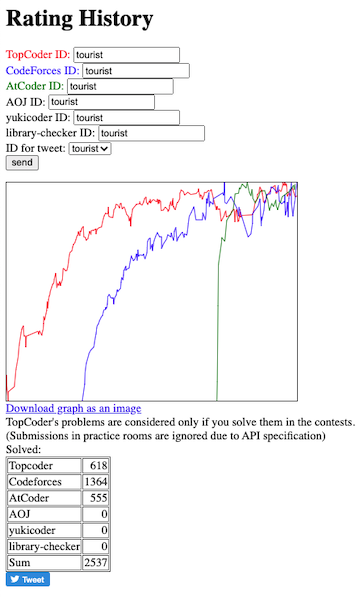 -
Badge Generator - レーティング(アルゴリズム部門、ヒューリスティック部門)に関するバッジが生成できる。QiitaやZennの各種統計指標にも対応している。
- 理由: 2023/04/25にAtCoderバッジのサポートが終了したため。（サービスのトップページにて掲示されていることを確認）
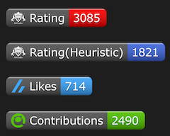
コンテストの成績に関連するサービス
-
AtCoder Rating Simulator - Ratedコンテスト当日に、所定のレーティングに到達するのに必要なパフォーマンスを自動返信するTwitter Bot。

-
AtCoder Stalker - ライバルが精進したときLINEにプッシュ通知される。
- 理由: 開発者により、サービス終了が告知されたため(出典)。
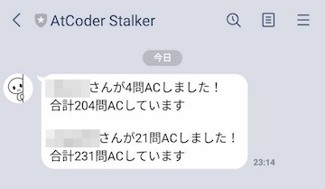 -
AtCoder TL
- レーティング帯ごとのTwitterタイムラインを生成する。全てのタイムラインをまとめたWeb版も公開されている。
- 確認した日: 2023/06/20
- 理由: Twitter APIの有料化に伴い更新停止、サービス終了の告知を確認したため(出典)。
-
AtCoder相性診断 - レーティングを元に相性を診断する。
- 理由: 作者からサービスの提供終了の連絡を受けたため。
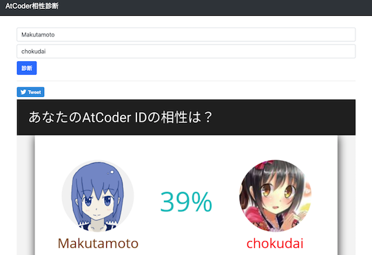 -
AtCoder じゃんけん - 指定した2人のユーザが共通して出場したコンテストの順位を比較できるWebアプリ。
- 理由: Google Cloud Platform(GCP)で、Go1.9の提供が終了したため。
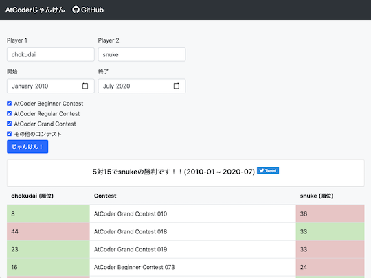
コンテストに関する統計情報
-
AtCoder平均 - 直近nか月における各種コンテストの平均順位とパフォーマンスを表示する。
- 理由: 作者からサービスの提供終了の連絡を受けたため。
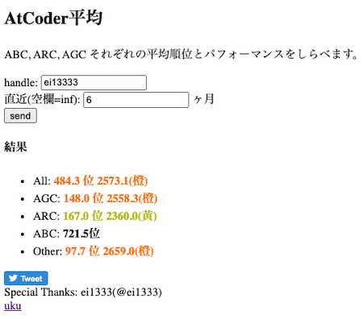 -
AtCoder Diff Scores - レーティングとAtCoder Problemsで推定されたDifficultyの累計値の推移を表示する。
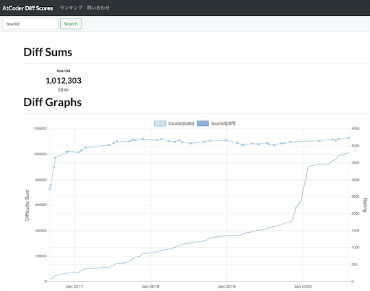 -
AtCoder 色別正解率 - 各種コンテストにおけるレーティング帯ごとの正解率を表示する。作者による注: 手動更新のため、最新情報の反映にやや時間を要する。
- 理由: 作者からサービスの更新終了の連絡を受けたため。
- 代替手段: 同一の作者が公開しているユーザスクリプト「AtCoderColorStandings」を利用する。

-
AtCoder Stats - コンテスト、問題、ユーザに関する様々な統計情報が閲覧できるWebアプリ。
- 理由: Google Cloud Platform(GCP)で、Go1.9の提供が終了したため。
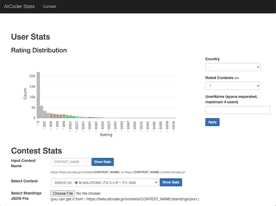 -
あなたのレートはどこから? - レーティングが、どのコンテスト区分(ABC、ARC、AGC、その他)から得られているかを求める。
- 理由: 作者からサービスの提供終了の連絡を受けたため。
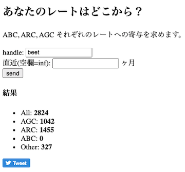
クイズ・ゲームなど
-
AtCoder Games - 過去問に登場したゲームで遊ぶことができる。
- 理由: 作者からサービスの提供終了の連絡を受けたため。
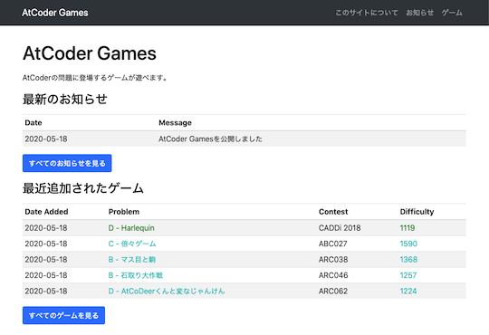
Bot
-
毎日C D問題通知Bot - AtCoder Beginner Contest (ABC)のC問題・D問題のリンクを毎日ツイートしてくれる。
- 確認した日: 2023/06/03
- 理由: 開発者により、サービスの提供終了が告知されたため(出典)。

スクリプト
提出コードの正誤判定
-
ac-standings-notifier - コンテスト中に「順位表」ページを開いておくと、順位を通知する。
- 理由: 記載はないが、AtCoderの仕様変更に伴うものと思われる。
- 代替手段: AtCoder コンテスト実況 Botを利用する。
-
AtCoder judge notifier - 「提出」ページのジャッジ結果を通知するChrome拡張機能。
- 理由: 作者が公開を取りやめたと思われるため。
- 代替手段: AtCoderResultNotifierなどを利用する。
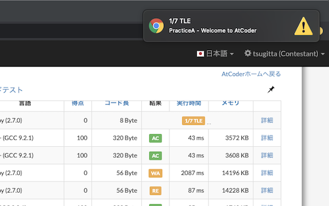 -
AtCoder Problems Penalty Counter - AtCoder ProblemsのTableページで、各問題のコンテスト中のペナルティ数を表示する。
- 理由: AtCoder Problemsで実装されており、追加で導入する必要性は薄いと思われるため。
- 代替手段: AtCoder Problemsを利用する。
提出コードを確認する
-
AtCoder Tab 4matter - 「提出結果」ページで、ソースコードのタブ幅を4に揃える。
- 理由: 作者が公開を取りやめたと思われるため。
-
AtCoderProblemsRush - AtCoder Problemsのクローラが実行される前に、提出データをブラウザに保存し進捗状況を表示する。
- 理由: AtCoder Problemsでの進捗状況が短時間で更新されるようになり、追加で導入する必要性は薄いと思われるため。
- 2021年2月23日追記: スクリプトのリンクが削除されているのを確認。
問題に関する統計情報を見る
-
AtCoderACPercentage - ある問題について、同じレーティング帯の参加者が正解している割合を順位表に表示するユーザスクリプト。
-
ac-writers script - ユーザの「コンテスト成績表」ページにコンテストのWriterを表示する。
- 理由: 作者が公開を取りやめたと思われるため。
- 確認した日: 2023/05/29
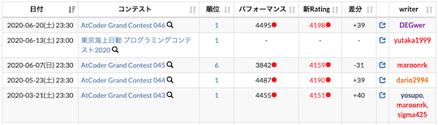
外部サービス
-
acscores-link - ユーザ名のドロップダウンメニューにAtCoder Scoresへのリンクを追加する。
- 理由: 記載はないが、AtCoderの仕様変更に伴うものと思われる。
- 代替手段: AtCoder Scoresのリンクから閲覧する。
-
AtCoder Problems Premium - AtCoder Problems の各ページをより華やかにする(背景色の変更、アニメーションの追加)。
- 理由: 作者から削除依頼を受けたため。
- 確認した日: 2023/06/22
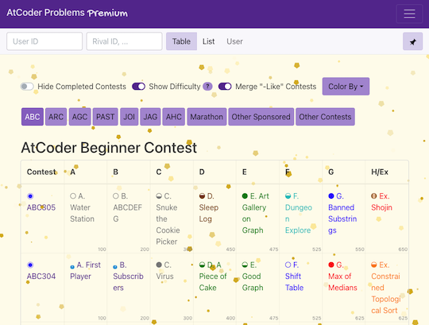
記事
コードを書くための環境構築を行う
- atcoder_docker_sample - Visual Studio Code・Docker・Gitを使って、PythonとC++の実行環境を構築することができる。
部活・サークル・同好会に参加する
- ゼロから始める競プロ部 - 部長 次郎花 - 会社のプロジェクトメンバーと競プロ部を立ち上げたjirohhana2さんが、コンテストの参加記を不定期に連載している。
- 確認した日: 2021/02/20
競技プログラミングと就転職
- AtCoder学生ユーザー座談会「内定先、どうやって決めましたか？」 - AtCoderの学生ユーザ3人を対象に、AtCoderを始めたきっかけ・内定先の決め手・初任給など覆面座談会の内容を紹介した記事。
資料集
- KCLC公開講座 - Kaisei Computer Lovers' Club (KCLC)の有志によって作成された公開資料集。競技プログラミングの入門者・初心者向けに、興味を持ってもらうためのきっかけ作り、データ構造、基礎文法などの資料が用意されている。
- 理由: 記載なし。
- 代替手段: 調査中。
動画
YouTubeのチャンネル
- ななみつき - Nanamitsukiさんのチャンネル。コンテストの過去問を解く動画などが公開されている。
- 確認した日: 2023/07/02
- 理由: 記載なし。
- func - func_hsさんのチャンネル。コンテストの過去問を解く動画が公開されている。
- 確認した日: 2023/07/02
- 理由: 記載なし。
- うさぎ - kmykさんのチャンネル。
- 確認した日: 2023/07/02
- 理由: 記載なし。
- どきんちゃんねる - dokinさんのチャンネル。入門者・初心者向けに、問題の考察・C++での実装過程が丁寧に解説されている。
- 理由: 記載なし。
- 代替手段: 調査中。
ライブラリ
ACL C++
- ac-library-mirror - AtCoder Library (ACL)の非公式ミラー。別言語へのラッパー作成などに役立てるため、公式ライブラリの変更を管理している。
ACL C#
- key-moon/ac-library-cs
- C#版。
C++
- comp-prog-jp-library-standard/competitive-programming-library - 競技プログラミングのための共通ライブラリをまとめようとしたプロジェクト。
- 理由: 記載なし。
- 代替手段: AtCoder Library (ACL)やLibraries and Snippetsなどで公開されているライブラリを利用するか、自分で作成する。
- gzlcp/competitive-library
- gazelleさんのC++ライブラリ。
D
- Sobaya007/sbylib
- sobayaさんのDライブラリ。
Go
- naipia/competitive-programming-go
- naipiaさんのGoライブラリ。
Java
- hiro116s/atcoder_library
- hiro116sさんのJavaライブラリ。
Kotlin
- shin2ro/algorithms-in-kotlin
- shin2roさんのKotlinライブラリ。
Python
- Coki628/Python/lib
- Coki628さんのPythonライブラリ。
- maspypy/compro_library
- maspyさんのPythonライブラリ。
- mts1104/atcoder
- parenthesesさんのライブラリ。レポジトリには、C++のライブラリも含まれている。
- Neterukun1993/algorithm
- neterukunさんのPythonライブラリ。
不明
- sciencesakura/atcoder-sandbox
- sciencesakuraさんのライブラリ。
関連コンテストサイト
アルゴリズム系コンテスト
-
CF Problems - 開催されたコンテストの問題を一覧できるwebアプリ。
- 理由: 記載なし。
- 代替手段: CONTEST MANIAや別の作者による同名のCodeforces Problems、CF-Problemsを利用する。
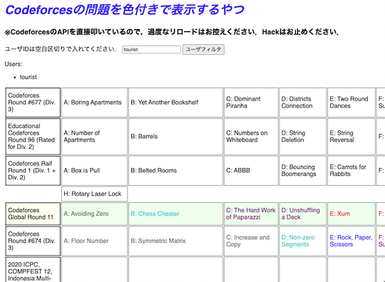 -
Codeforces Problems - 開催されたコンテストの問題を一覧できるwebアプリ。
- 理由: 記載なし。
- 代替手段: CONTEST MANIAや別の作者による同名のCodeforces Problems、CF-Problemsを利用する。
数学系コンテスト
-
オイライン数学 - 中学・高校数学オリンピックレベルの問題がほぼ毎日投稿されている。
- 確認した日: 2023/06/22
- 理由: 記載なし。
-
入試数学コンテスト - 数学の入試対策ができるコンテストサイト。
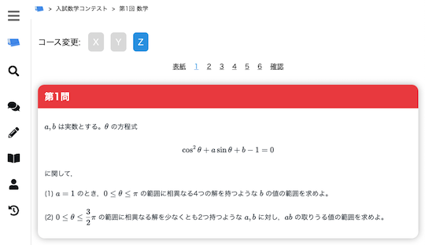 -
OMC problems - OnlineMathContestで開催されたコンテストの問題一覧を確認できる。ベータ版。
- 代替手段: 公式ページから閲覧する。
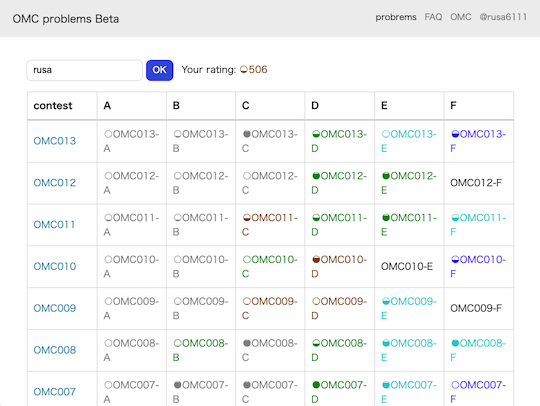